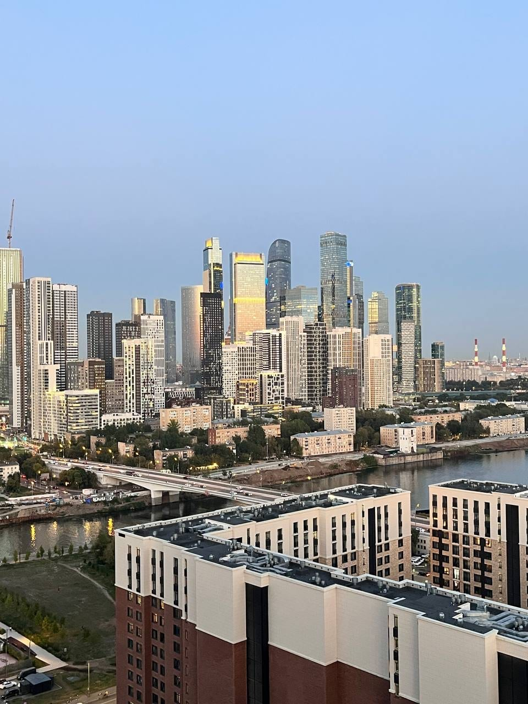
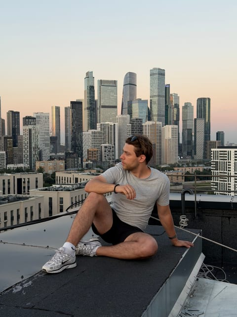

Москва-Сити
Крыша в Филях
Крыша с прямым видом на деловой центр: башни Москва-Сити стоят плотной группой прямо по курсу, а внизу — река и жилые кварталы.
Эту крышу мы сейчас не предлагаем — посмотрите другие в каталоге.
Что видно с этой крыши
Отсюда Москва-Сити виден целиком и с правильного расстояния: башни не наезжают друг на друга и не теряются вдали, а выстраиваются в узнаваемую группу от края до края кадра.
На переднем плане — обычная жилая Москва: панельные и кирпичные дома, дворы, зелень. Этот контраст между спальным районом и стеклянными небоскрёбами за ним и делает кадр интересным: видно, как город меняется по мере удаления.
Ниже проходит Москва-река, а на закате стекло башен ловит свет и начинает отражать розовое и оранжевое небо.
Когда лучше приходить
Закат и сумерки. На закате башни отражают цветное небо, а после захода в них включается свет, и деловой центр превращается в светящуюся стену. Днём вид остаётся, но выглядит буднично.
Кому подойдёт
Для тех, кому нужен именно современный кадр — стекло, высота, огни, — а не купола и сталинские высотки. Хорошо работает для портретов: человек на переднем плане, башни за спиной.
Как попасть
Подняться можно только вместе с сопровождающим: мы встречаемся у дома в назначенное время, поднимаемся и коротко объясняем правила на площадке. Точный адрес и точку встречи присылаем после подтверждения записи — заранее их не публикуем. Что взять с собой: удобную нескользящую обувь и тёплый слой, вечером на высоте прохладнее, чем на улице. Подробнее — в гиде «Как попасть на крышу в Москве».
Фотографии
Кадры с этой крыши
Все снимки сделаны нами на этой локации — они показывают, что реально видно с точки.

FAQ
Вопросы про эту крышу
Чем эта крыша отличается от «Фили 60 этажей»?
Высотой и ракурсом. Здесь вы смотрите на башни снизу вверх с обычной жилой крыши, там — почти вровень с ними, с высоты 60 этажей.
Хорошо ли здесь получаются портреты?
Да, это одна из наших самых удобных крыш для съёмки человека на фоне Сити: башни дают узнаваемый фон, а закатный свет — мягкий.
Видно ли отсюда Кремль?
Нет. Эта точка полностью про деловой центр. За историческим центром — на Таганскую или Курскую.
Над городом